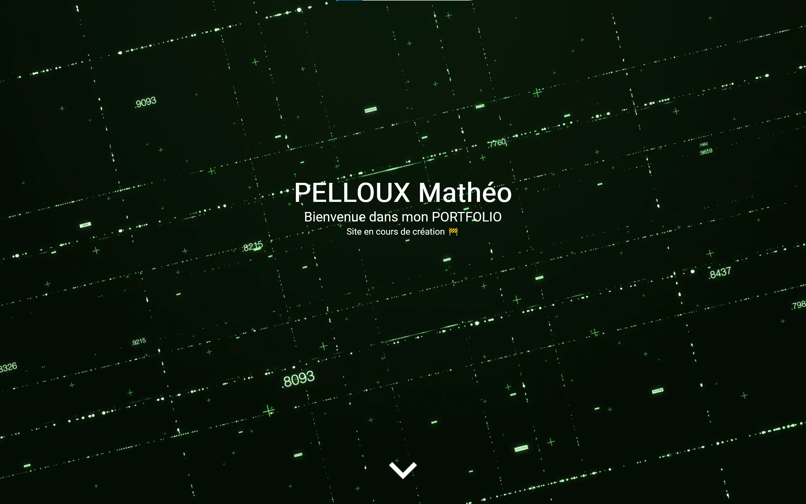

Projets/expériences :

Portfolio
HTML - CSS
Serveur WEB personnel
ND OVH - XAMPP - WinSCP
Bienvenue dans mon PORTFOLIO
Site en cours de création 🚧
Bonjour je m'appelle Mathéo PELLOUX 👋
Je suis actuellement étudiant au campus de la CCI de Vaucluse 🗺️ en première
année de BTS SIO (Services Informatiques aux Organisations) dans l'option SISR
(solutions d'infrastructure, systèmes et réseaux) 💻🔌
Actuellement toujours en cours d'étude 🎓, je vous propose sur ce portfolio de
retrouver ci-dessous les différentes études, et projet professionnel que j'ai pu
entreprendre au sein de ma carrière. 👩💻
📞 06 09 84 04 49
📧 pellouxmatheopro@gmail.com
📍 71, lotissement le pécoulin, 13750, Plan-d'Orgon
🎂 20 ans - 06/07/2004
🚜 PERMIS B - Véhiculé
🔗 linkedin.com/in/mathéo-pelloux-1395702bb
🔗 https://github.com/MatheoPelloux
04/06/2022 – 30/05/2024 : Usineur
APS | Verquières | CDI
28/02/2022 – 25/03/2022 : Stage Technicien d’usinage
APS | Verquières | Stage
27/09/2021 – 22/10/2021 : Stage Technicien d’usinage
APS | Verquières | Stage
2024 – 2026 : Projet BTS SIO option SISR
CCI Vaucluse | Avignon
2019 - 2022 : Bac Professionnel Technicien d’usinage
Adam de Craponne | Salon de Provence
HTML - CSS
ND OVH - XAMPP - WinSCP
La veille technologique, élément de la veille stratégique, consiste à surveiller les évolutions techniques, les innovations dans un secteur d’activité donnée.
La veille technologique comprend notamment la surveillance, la collecte, le partage et la diffusion d’information permettant d’anticiper ou de s’informer
sur des changements en matière de recherche, développement, brevet, lancement de nouveaux produits, matériaux, processus, concepts, innovation de fabrication, etc….
Cela a pour but d’évaluer l’impact sur l’environnement et l’organisation.
J'ai effectuer ma veille technologique grâce aux newsletters tel que Raven Reader un agrégateur de flux RSS mais aussi des alerte grâce a Google Alerte. En plus des informations fournis chaque semaine/mois, je regarde aussi des youtubeurs t'elle que Leo - Techmaker ou bien encore Micode avec sont autre chaine Underscore.